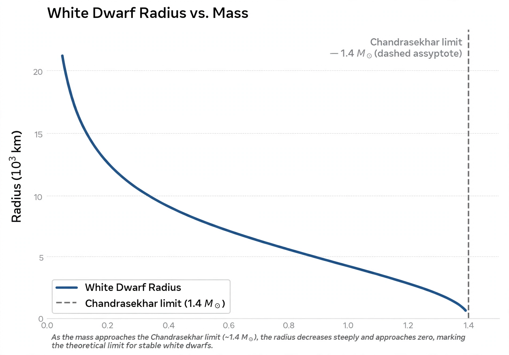

Chandrasekhar limit

[Image: Graph of white dwarf radius versus mass, falling to zero at the Chandrasekhar limit]The Chandrasekhar limit is the maximum mass of a stable white dwarf star: approximately 1.4 times the mass of the Sun (more precisely about 1.44 M☉ for a typical composition). Above this limit, electron degeneracy pressure is insufficient to balance gravity, and the star collapses — in nature, to a neutron star or black hole, or, for an accreting carbon–oxygen white dwarf, in a Type Ia supernova explosion.
The limit was calculated by the 19-year-old Subrahmanyan Chandrasekhar in 1930 during his voyage from India to England, by combining Fermi–Dirac statistics with special relativity. Arthur Eddington's public rejection of the result in 1935 — he called the forced conclusion a 'stellar buffoonery' — drove Chandrasekhar to leave stellar structure for other fields, but the limit was fully vindicated by later physics and by the discovery of neutron stars and black holes.
Physics of the limit
Non-relativistic degeneracy pressure scales so that a white dwarf can support any mass by shrinking. As the electrons become relativistic, the pressure stiffens less rapidly with density, and above a critical mass no equilibrium exists. The value depends on composition through the number of nucleons per electron: 1.44 M☉ for helium/carbon/oxygen matter (μₑ = 2), lower for iron.
Role in astrophysics
The limit divides stellar fates: cores below it end as white dwarfs, cores above it collapse further (Stellar evolution). Because accreting white dwarfs explode at nearly the same mass, Type Ia supernovae have nearly uniform intrinsic brightness — after correction, they are the standard candles whose faintness at high redshift revealed the accelerating universe and Dark energy in 1998.